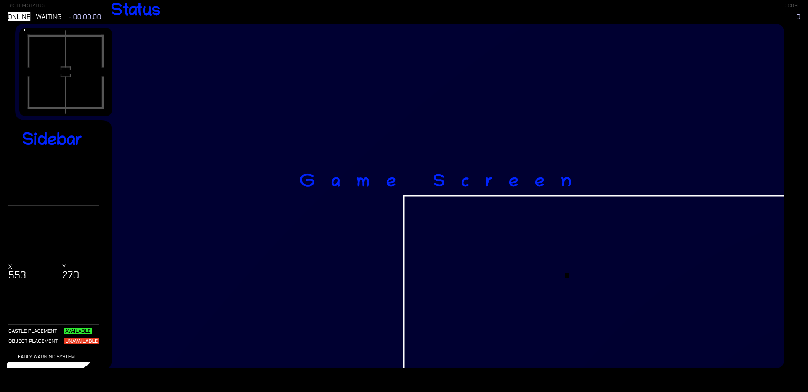

MMOSG
Massively Multiplayer Online Strategy Game
This is a web game made by and with contributions from many others, especially .
- The 24/7 IO Server - swaous.asuscomm.com
- The 24/7 Regular Server - swaous.asuscomm.com
- The 24/7 BIIIG IO Server - swaous.asuscomm.com
- richard map

- Development build; not always running (and sometimes containing non-MMOSG applications) - swaous.asuscomm.com.
- Local Development, if you're doin' some coding
Interested in MMOSG development or just want to peek under the hood? Check out the MMOSG server Github, or read the documentation for this server release.
Talk to other players and play mods, team games, and unofficial servers on the discord server!
How to Play
MMOSG is actually a very simple game, although this UI is off-puttingly complex at times. Before the action starts, you'll need to select a server in the list above OR manually write the URL in the server url input box. Then you should choose a banner. Banners are effectively your nickname - it's a callsign that identifies your pieces. There should be a random one by default, but for easier identification you should write your own. Then, press the start button! If everything is correct, the screen should change to look something like this:

There are a couple things of note here. The Sidebar can be scrolled down to see more statistics (if you're on an unusually tall screen, this won't be possible).
the Game Screen can also be scrolled - left, right, up, and down. The arrow keys and WASD will also move the game screen.
Everything on the sidebar and status area is pretty self-explanatory, although they will take some play to get the hang of.
TODO: finish this.